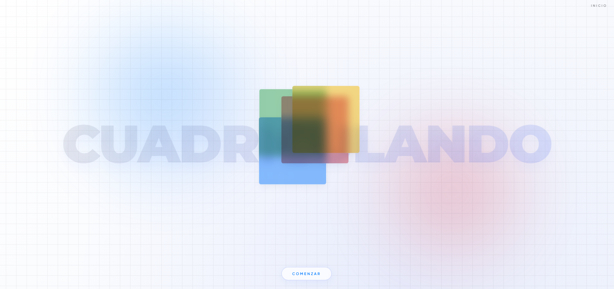

Proyectos


Diseño de Código
Cuadriculando
Sitio web e interfaz interactiva realizada en el Taller de Diseño de Interacción 2026.

Diseño de Código
Imagen Escrita 2024
Proyecto de código creativo e interactivo diseñado para la Exposición Imagen Escrita 2024.